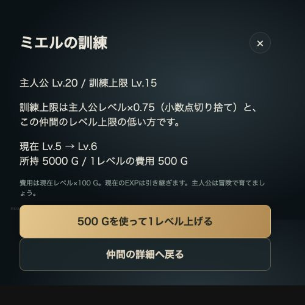

主人公と一緒に無理のない依頼をこなし、レベル・訓練・装備でパーティを育てましょう。
レベルを上げる4つの方法
- ダンジョン攻略：酒場の依頼を攻略します。深い階層ほど報酬EXPは多くなりますが、クリアできる難易度を選びましょう。
- 放置：チュートリアル完了後、アプリを閉じている間は編成中の仲間に10分で1 EXP。再開時に精算され、装飾品で増加できます。
- ストーリー：スタミナ消費0で少量のEXP・G。物語を進めながら育成できます。
- 訓練（ゴールド）：仲間の詳細からゴールドを使って直接1レベル上げます。主人公レベルの4分の3まで訓練でき、費用は現在レベル×100 Gです。
5階層以上は準備してから
5階層から雑魚敵も範囲スキルを使い、被害が増えます。無理をして敗れるより、低ランク・浅い階層で装備とレベルを整えるのがおすすめです。ボスの属性とおすすめ属性も確認しましょう。
主人公を必ず編成しよう
${portrait(character('aster'))}
ゴールド訓練の上限は主人公レベルの4分の3（端数切り捨て）です。主人公Lv.20なら仲間をLv.15まで訓練できます。主人公自身はゴールド訓練ができないため、一緒に冒険して育てましょう。自動編成では主人公が前衛に入ります。
ゴールドで仲間を訓練する
- 下部メニューの「仲間」を開きます。
- 育てたいキャラをタップし、詳細画面を下へスクロールします。
- 「訓練（ゴールドでレベルアップ）」を押します。スキル説明の下・装備欄の上にあります。
- 上限・費用を確認し、「Gを使って1レベル上げる」を押します。

実装済みの訓練画面を説明用データで撮影。数値は一例です。
費用は現在レベル×100 G。1回で1レベル上がり、現在のEXPは引き継ぎます。キャラ自身のレベル上限も超えられません。ボタンが押せないときは、ゴールド不足・主人公とのレベル差・キャラの上限を確認してください。
装備を揃えよう
武器・防具・アクセサリーで能力値を上げられます。仲間の詳細の「装備を変更」から手動で選ぶか、「自動装備」でおすすめに入れ替えられます。
編成画面の「自動装備」→「自動で装備する」なら、編成中の全員をまとめて装備します。未装備品と編成中の装備を組み直し、待機中の仲間の装備は外しません。新しい装備を獲得したら見直しましょう。
装備の集め方
- 通常ダンジョン：装備ドロップが設定された依頼をクリア。依頼・ダンジョンのページで戦利品を確認してください。
- 季節イベント：ボス撃破時に65%で専用3アイテムから1個を抽選。単独はドロップ時に獲得、アライアンスは参加パーティのダイスで獲得者を決定します。F〜Dは控えめな装備、C以上はレアな限定装備や装飾品を狙えます。
- 釣り桟橋：装飾品を入手して有効化すると、アプリを閉じている間も1時間ごとに5%で通常装備1個。獲得時のレア度は★50%・★★35%・★★★15%です。
ストーリーでは装備はドロップしません。装備集めは酒場の依頼やイベントを活用しましょう。
パーティ編成のやり方 → / 装備・アイテム一覧 → / 酒場・依頼 →